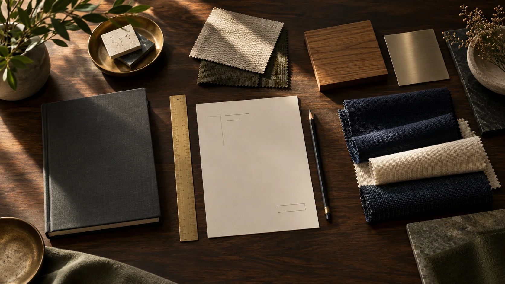

01 / INTAKE
Everything begins
with possibility.
Before the first stitch, there is a material, an idea and a place to begin. Give every incoming roll a place in the process.
A place for every materialTHE BEAUTY IS IN THE PROCESS
From the first roll to the final handover.
Discover the craft. Find clarity in every stage.
THE JOURNEY / FIVE CHAPTERS
There is more to a finished piece than what meets the eye. Materials, machines, people. Every stage has a part to play.
Explore an illustrative textile journey, from arrival to handover.
Begin the story01 / INTAKE
Before the first stitch, there is a material, an idea and a place to begin. Give every incoming roll a place in the process.
A place for every material
02 / PREPARATION
The frame is set. The needle aligns. The next stage is ready. Keep the handover as considered as the work itself.
The right work. The right stage.
03 / EMBROIDERY
Thread by thread, the design takes shape. Follow the work as it moves, with room for the pieces that need another look.
Progress, without losing the detail
04 / INSPECTION
A closer look before the final fold. Separate what is ready from what needs attention, and let quality have its own place in the journey.
A clear path through inspection
05 / DISPATCH
Folded, packed and ready for its next chapter. Connect the final handover to the same process that started it all.
From the first roll to the final handoverTHE WORKSPACE BEHIND THE WORK
Textflow brings your stages, materials and orders into one workspace. Built around the way your factory works.
Follow jobs through your own stages, including inspection and rework.
Organise stock, choose measurement units and record consumption against jobs.
Keep dispatch preparation connected to the production work that came before it.

THE PROCESS IS YOURS.CONFIGURE, DON’T COMPROMISE
Start with a template or a blank canvas. Choose the modules you need, define your stages and bring your team into the picture.
From fabric inward to the final fold. Start with a textile template, then make the stages your own.
YOUR NEXT CHAPTER
A clearer process starts with your first stage.